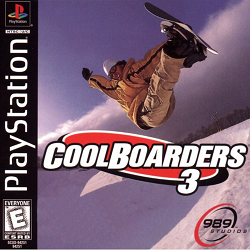
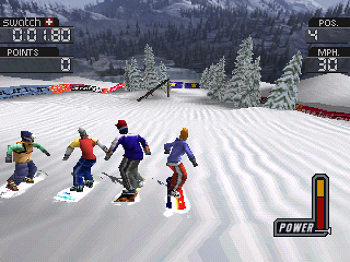
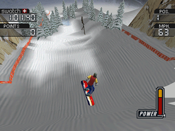

Cool Boarders foi o primeiro jogo de snowboarding lançado para PlaySyation, essa e a terceira versão do jogo que ja tinha feito sucesso nas versões anteriores. Com novos gráficos e recursos. As imagens são de primeira linha, e tanto as texturas como as cores de arrebentar de qualidade para o console. São 23 modelos de snowboard para escolher, todos com caractéristicas, tamanhos e largura diferentes. Outra novidade na época era os movimentos dos competidores. Que podiam até dar socos no seu rival (como em Rosd Rash) para garantir a sua posição na disputa. Podendo ser que o novo movimento não faça muito sucesso entre os praticantes do esporte, já que dar soco não é permitido na vida real. Depois da escolha da sua prancha e jogador, é hora de enfrentar um dos cinco trajetos disponivei. Cada montanha possui um visual e obstaculos próprios, e entre as manobras voce terá de fazer muitos saltos e giros, tudo sem cair pois isso poderá ser o fim da prova para voce. Quem for realmente fera poderá participar de duas provas que estão escondidas, como prêmio para os vencedores.
Veja Algumas dicas para parar de comer neve nas quedas
1 - Todas as pranchas: Entre no Tournament Mode e, no local onde voce pode digitar um nome, escreva: OPEM(espaço)EM
2 - Todas as montanhas Também em Tournament Mode, Digite o nome WONITALL para conseguir acessar todos os circuitos.
3 - Competidor cabeçudo Em Tournament Mode, Digite BIGHEADS para os jogadores ficarem cabeçudo.
4 - Novas pranchas e competidores Para conseguir jogar com novas pranchas e competidores, jogue uma partida no modo Single Race, no nível Pro e bata o recorde do trajeto.
5 - Consiga todos os itens Dispute uma competição simples na montanha mais difícil (Power Downhill) e chegue em primeiro com 3400 pontos. Todos os competidores, pranchas e todas as montanhas ficarão à disposição.
|  | |
|  |